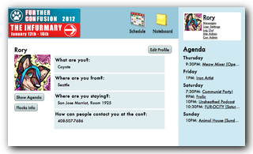
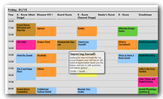

MyFC & The Wepwawet Project
- 
- 
Fan conventions are busy places, with lots of events to go to and lots of people to see. I wanted to help make the chaos a little more manageable by allowing people to plan things out in advance, and post information about themselves and where they were going.
I took on all the front-end design and development myself, from CSS through JavaScript and into some of the Python controller code, with a great backend developer rounding out the team. We put together the project on evenings and weekends, and launched at a convention with 3000 attendees in January 2012.
We have big plans for this project, with more conventions lined up for 2012 and 2013, and more folks coming together to fill out the features. Our aim is to make an complete solution for all the web needs for small to medium-sized fandom conventions.